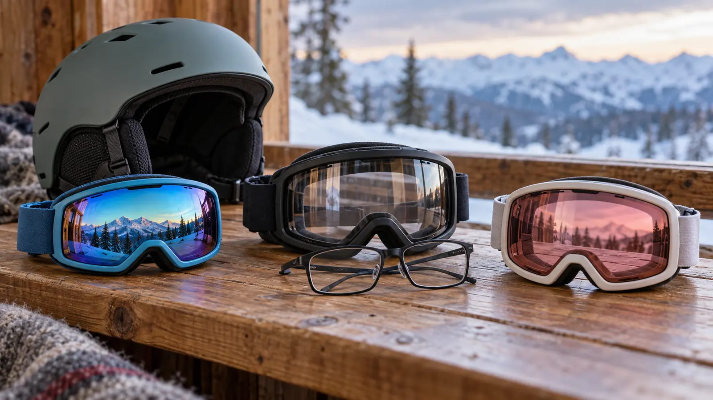

Compact youth fit
Fits: smaller faces where an adult frame presses the nose, gaps at the cheek or overwhelms the helmet opening. Tradeoff: less interior volume and a shorter useful size window. Reject: “youth” with no dimensions or return route.
WINTER GEAR · SKI GOGGLES · AUTHORITY-EXPANSION
The right category is the one that seals on the child’s face, works with the actual helmet and glasses, and matches the day’s light—not the one with the loudest lens.

Youth, OTG and low-light are not three cleanly separate boxes. A smaller youth frame may also fit over some glasses; a low-light lens may be offered in an OTG frame. Start with the child’s face, actual helmet and actual prescription glasses. Then choose the lens for expected light. Color comes last.
A goggle does not make skiing safe and does not replace instruction, a correctly selected helmet, weather judgment or a ski area’s rules. CPSC advises appropriate goggles and other protective equipment for winter sports. The American Academy of Ophthalmology recommends eyewear that blocks at least 99 percent of UV; verify the exact maker claim rather than inferring UV protection from a dark or mirrored lens.
Visible light transmission, or VLT, is the percentage of visible light a lens allows through. Higher VLT generally admits more light for dimmer conditions; lower VLT generally reduces more visible light for bright conditions. There is no universal family number for every mountain, hour, storm and eye. Use the exact manufacturer’s range and intended conditions.
Lens tint is not proof of UV protection. Darkness is not proof of optical quality. “Photochromic” means the lens is designed to change with light, but speed, usable range and temperature behavior are maker-specific. “Polarized” can change glare but may not be desirable for reading every snow-surface cue. Read the exact product documentation and ask the child’s eye-care professional when prescription, light sensitivity or vision history changes the choice.
Contact lenses may solve fit for some wearers but are a medical and family decision, not a gear hack. Do not advise a child to change prescribed vision correction for a goggle.
Follow the maker’s cleaning and drying directions. Do not rub the inner lens when wet; many lenses use a delicate anti-fog treatment. Air-dry away from heaters, car dashboards and direct high heat. Store the lens protected from abrasion and keep vents free of snow. Anti-fog wipes, sprays or cleaners are not automatically compatible with every coating.
Fog can come from overdressing, blocked vents, wet foam, poor helmet interface, warm breath and rapid temperature changes. Fix the system, not just the lens. The first ski day plan keeps the session short and finishable. The winter-hat and balaclava guide explains why a bulky hat is not automatically helmet-compatible. The winter-boot guide keeps the rest of the setup from becoming a fit guessing game.
Bright sun: use the maker’s documented lens range and UV claim; bring the appropriate alternate only if the system permits. Flat light or snow: a higher-VLT option may improve usable light, but it does not create terrain contrast beyond the lens’s design or make poor visibility safe. Fogging: stop in a safe place, address moisture and ventilation, and never ski with obscured vision. Low energy: do only the indoor helmet test and photograph the fit notes. Shopping can wait.
Skip if the child’s current goggle fits the real helmet and conditions, the family cannot verify the exact maker and lens information, or the child needs prescription guidance first. Skip online-only buying when returns are difficult and fit is uncertain. A reputable local ski shop can be worth more than a long comparison list when the helmet, face and glasses need to be checked together.
Reviewed November 1, 2026 using the U.S. Consumer Product Safety Commission’s winter-sports safety guidance, the American Academy of Ophthalmology’s snow and UV eye-safety guidance, and current manufacturer fit and VLT explanations from Giro. Universal guidance is separated from manufacturer-specific fit language; the exact product manual controls. No hands-on test, certification, optical performance, price, stock or warranty is claimed. Report corrections through About.
MAKE THE WEEK COUNT
Build the plan your family can finish well, then leave enough energy for the next part of the day.
More family plansTHE USEFUL STUFF
These are practical categories to compare—not a reason to overpack. Check fit, specifications and current reviews before buying.
Paid links: As an Amazon Associate I earn from qualifying purchases. You pay no additional cost.
Compare the exact frame dimensions, face seal, nose clearance, strap range, helmet interface, lens documentation and clean-return terms. Youth labeling does not prove fit.
See current options → COMPARE ON AMAZONRequire explicit over-the-glasses design, then test the child’s actual frames for bridge, temple and lens clearance with the real helmet.
See current options → COMPARE ON AMAZONCompare the maker’s documented VLT range, UV claim, intended light conditions, lens compatibility and care instructions. Tint alone proves none of these.
See current options →